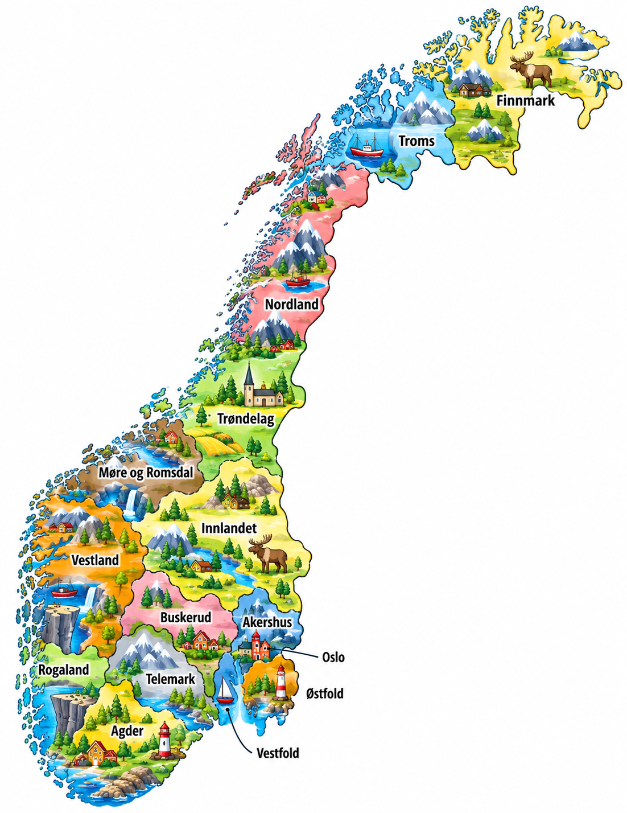
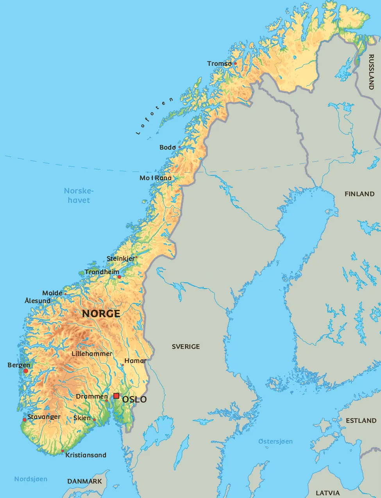

⚡ Korte fakta om Norge
🗺️ Kart over Norge
Klikk på et av kartene for å åpne og zoome i fullskjerm!


1. Natur og klima
Norge er et utrolig langt land med spennende natur! Vi har høye fjell, dype fjorder, grønne skoger og massevis av øyer.
Høyeste fjell
Galdhøpiggen er Norges høyeste fjell! Det er hele 2 469 meter høyt.
Superlang kyst
Norge har verdens nest lengste kyst! Bare Canada har lengre kystlinje enn oss.
Golfstrømmen
En varm havstrøm kalles Golfstrømmen. Den gjør at Norge ikke er iskaldt hele året!
Dyreliv: I skogene våre bor det elg, rådyr, bjørn og ulv. I havet og langs kysten kan du se hvaler, sel og massevis av fisk!
2. Folk og samfunn
I Norge bor det over 5,5 millioner mennesker. De fleste bor i eller i nærheten av store byer.
🏢 Største byer i Norge
- 🔹 Oslo: Norges største by og hovedstad!
- 🔹 Bergen: Byen mellom de sju fjell.
- 🔹 Andre store byer: Stavanger, Trondheim, Drammen og Fredrikstad.
🪅 Samer og minoriteter
Samene er Norges urfolk. De har sine egne språkgrupper, sin egen kultur og sine egne klesdrakter (gákti).
Norge har også fem nasjonale minoriteter: kvener, skogfinner, jøder, rom og romani.
🗣️ Hvilke språk snakker vi?
Norsk har to skriftspråk: bokmål og nynorsk. I tillegg snakkes det samiske språk (som nordsamisk, lulesamisk og sørsamisk) og kvensk!
3. Stat og politikk
Norge er et monarki og et demokrati. Det betyr at vi både har en konge og at folket velger hvem som skal bestemme!
Kong Haakon VIII
Norges konge og statsoverhode.
Laster...
Statsministeren som leder regjeringen.
Stortinget
Her sitter politikerne som lager de norske lovene.
📍 Norge er delt inn i 15 fylker og 357 kommuner.
4. Norges historie
🧊 Istiden
For ca. 10 000 år siden smeltet isen, og de første menneskene kom til Norge.
⚔️ Vikingtiden (800–1050)
Vikingene seilte ut i verden med de flotte skipene sine. Harald Hårfagre samlet Norge til ett rike!
 Grunnloven (17. mai 1814)
Grunnloven (17. mai 1814)
Norge fikk sin egen grunnlov på Eidsvoll den 17. mai 1814. Det feirer vi hvert eneste år!
👑 1905 og Kong Haakon VII
Norge ble et helt selvstendig land i 1905. Danske prins Carl ble valgt til konge og tok navnet Kong Haakon VII.
🛢️ Olje i havet!
På slutten av 1960-tallet fant vi olje og gass i Nordsjøen. Det gjorde Norge til et veldig rikt land.
5. Økonomi og næringsliv
Hva lever vi av i Norge? Vi er utrolig heldige som har mange nyttige naturressurser!
Olje & Gass
Pumpes opp fra havet og selges til andre land.
Laks & Fisk
Norge sender god laks og fisk til hele verden.
Vannkraft
Fossene våre lager ren og fin strøm.
Trevirke
Skogen gir oss tømmer og papir.
6. Kultur og utdanning
🏫 Skole og sport
I Norge er det gratis å gå på skole for alle barn mellom 6 og 16 år!
⛷️ Norges mest populære sporter:
Ski (langrenn og alpint) og fotball!
🌟 Kjente nordmenn
- 🎨 Edvard Munch: Maler av det kjente bildet «Skrik».
- 🎼 Edvard Grieg: Verdensberømt komponist.
- 📚 Jon Fosse: Vant Nobelprisen i litteratur!
- 🎭 Snøhetta: Arkitektene bak det flotte Operahuset i Oslo.
🧠 Test deg selv: Norge-Quiz!
Spørsmål laster...